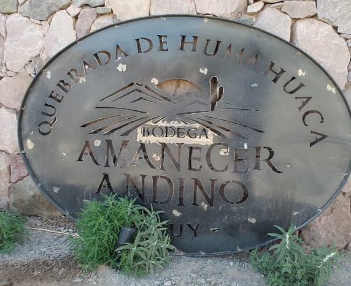
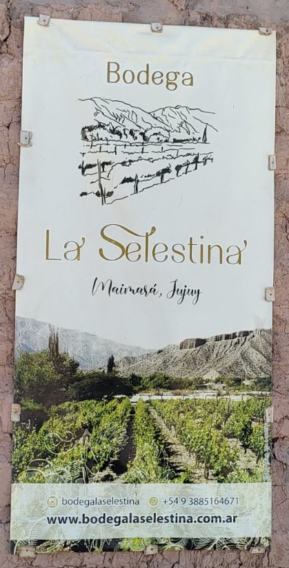
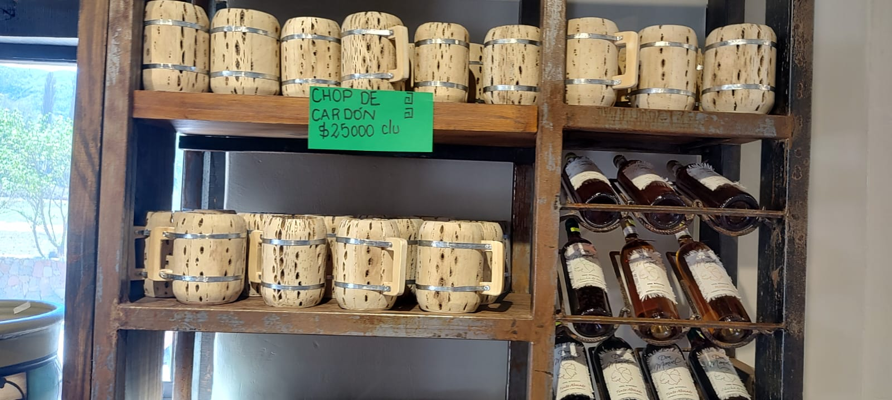

PROYECTO EDUCATIVO
DESAFIO EMPRENDEDOR REVISTA EDUCATIVA DIGITAL
¡BIENVENIDOS A DESAFÍO EMPRENDEDOR!
RESEÑA DE LUGARES VISITADOS:
1. BODEGA AMANECER ANDINO:
Ubicada en Tilcara, esta bodega destaca por la producción de vinos de alta calidad, elaborados artesanalmente y utilizando uvas locales. Los estudiantes aprendieron sobre las etapas de cultivo y el proceso de fermentación.

2. BODEGA LA SELESTINA:
Este emprendimiento en Maimará combina tradición y modernidad en la elaboración de vinos. Aquí se abordaron temas relacionados con la comercialización y la diferenciación de productos en mercados locales.

3. CERVECERÍA AYMARA:
Un proyecto innovador en Maimará que integra la producción de cerveza artesanal con la elaboración de productos regionales como alfajores de quinoa, escabeches y dulces. Los alumnos tuvieron la oportunidad de observar cada etapa del proceso productivo y entrevistar a los emprendedores.
